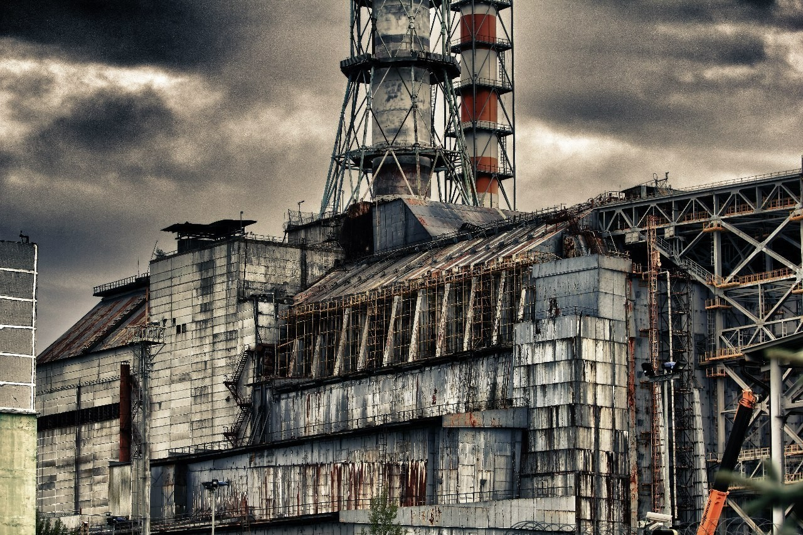

μ Paseo Atomico μ
Islas Bikini
Las pruebas nucleares en el atolón Bikini fueron una serie de detonaciones de 23 artefactos nucleares realizadas por Estados Unidos entre 1946 y 1958.
BikiniSiempre Coca-Cola
Apacigue la sed del viaje con una Coca-Cola bien fresquita, sus burbujas atomicas haran las delicias, el azucar pone gordos a los niños.
SenderismoEquipate adecuadamente
La ropa blindada contra radiación electromagnética abarca multitud de prendas diferentes, desde gorros hasta camisetas, pasando por chaquetas.
Equipamiento

Senderismo en Prypiat
Prípiat es una ciudad fantasma en la zona de exclusión de Chernóbil al norte de Ucrania en la región de Kiev, cercana a la frontera con Bielorrusia.
Prypiat